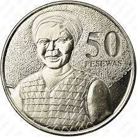

WELCOME TO THE NOTIFICATION PAGE OF GENEROUS LIFE FOUNDATION
WELCOME TO THE NOTIFICATION PAGE OF GENEROUS LIFE FOUNDATION
GENERAL NOTICE
The foundation wishes to inform the general public that registration is still in progress.
ONLINE REGISTRATION
All registrations are done online via the registration page. Visit the page to register with us.
PROJECT 50 PESEWAS
This is the project whereby members contribute the little they have to help others by putting down 50 pesewas each day so that they can send the accumulated money at the end of each week or month.
KETEWA BIARA NSUA (KBN) PROJECT
In this project, members contribute any amount they have everyday into the foundation's coffers and even coins are allowed
CONTRIBUTIONS
Contribute all finances to 0246444630. The account bears the foundation's name. You can also contact 0544822193 for more information. Give to change people's lives. Be a blessing unto others for the little you have. God bless you for taking this step.